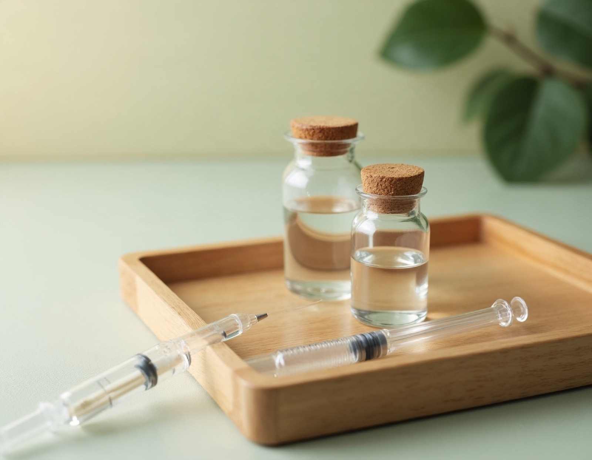

N약침(엔오약침)과
초음파 가이드 약침
산화질소(NO) 관련 성분을 함유한 약침과, 초음파 영상으로 위치를 확인하며 진행하는 약침 시술을 상담하실 수 있습니다.

N약침 (엔오약침)
약침은 한약재에서 추출·정제한 약액을 치료 부위에 주입해 침의 자극과 약물의 작용을 함께 활용하는 치료입니다. N약침은 이 가운데 혈관·신경·림프 등과 관련된 신호전달물질인 산화질소(NO) 관련 성분을 함유한 약침입니다.
N약침 상담 대상
- 근골격계 통증테니스 엘보, 회전근개 파열·염증, 무릎 퇴행성 관절염 등 인대·힘줄·관절 주변의 통증
- 신경·정서 관련 증상두통, 어지럼, 잠들기 어려움, 우울감·불안·긴장, 자율신경 불균형과 관련된 불편
- 순환 관련 증상수족냉증, 혈액순환 저하 등 혈액·림프 순환과 관련된 불편

초음파 가이드 약침
초음파는 방사선을 쓰지 않는 영상 검사입니다. 검사 부위에 젤을 바르고 프로브를 대어 피부 아래 구조물을 실시간 영상으로 확인합니다.
초음파 가이드 약침은 이 영상을 보면서 치료 부위와 주변 신경·혈관의 위치를 확인한 뒤 약침을 주입하는 방식입니다. 관절과 척추 주변처럼 구조가 복잡한 부위에서 위치를 확인하며 진행할 수 있습니다.
진행 방법
- 1
문진 · 진찰
통증 부위와 경과를 확인합니다.
- 2
초음파 확인
영상으로 치료 부위를 확인합니다.
- 3
약침 시술
영상을 보며 위치를 잡아 약침을 주입합니다.
- 4
경과 상담
시술 후 주의사항과 다음 일정을 안내합니다.
위치를 확인하는 과정이 있어 일반 시술보다 시간이 더 걸릴 수 있습니다. 사전 예약을 권해 드립니다.
※ 치료 효과와 경과는 개인에 따라 다를 수 있습니다. 이 페이지는 일반적인 안내이며, 실제 치료는 진찰 후 개인별로 안내드립니다.
약침 관련 질문
N약침(엔오약침)은 무엇인가요?
한약재에서 추출·정제한 약액을 치료 부위에 주입하는 약침 가운데, 산화질소(NO) 관련 성분을 함유한 약침입니다.
N약침은 다른 약침과 무엇이 다른가요?
N약침은 혈관 확장과 림프 순환에 관여하는 산화질소(NO)를 함유했다는 점이 가장 큰 특징입니다. 어떤 약침이 적합한지는 진찰을 통해 현재 상태에 맞춰 선택합니다.
초음파 가이드 약침은 일반 약침과 무엇이 다른가요?
초음파 영상으로 치료 부위와 주변 구조물을 실시간으로 확인하면서 시술하는 방식입니다. 위치를 영상으로 확인하며 진행한다는 점이 다르며, 확인 과정에 시간이 조금 더 걸릴 수 있습니다.
약침 시술은 많이 아픈가요?
초음파 검사는 젤을 바르고 프로브를 대는 비침습 검사로 통증이 없습니다. 약침 시술은 통증을 줄이기 위해 인슐린 주사기 수준의 매우 얇은 주사기를 사용하며, 염증이 있는 부위는 뻐근한 느낌이 들 수 있지만 보통 수분 안에 가라앉습니다. 통증에 예민하시면 미리 말씀해 주세요.
약침은 얼마나 자주 받아야 하나요?
증상의 종류와 정도에 따라 다르지만 보통 주 3회 이상을 권해 드립니다. 급성 통증은 초기에 매일 치료하기도 하며, 호전 속도에 맞춰 상담 후 간격을 조절합니다.
궁금한 점은 편하게 문의해 주세요
진찰 후 상태에 맞는 방법을 설명드립니다.